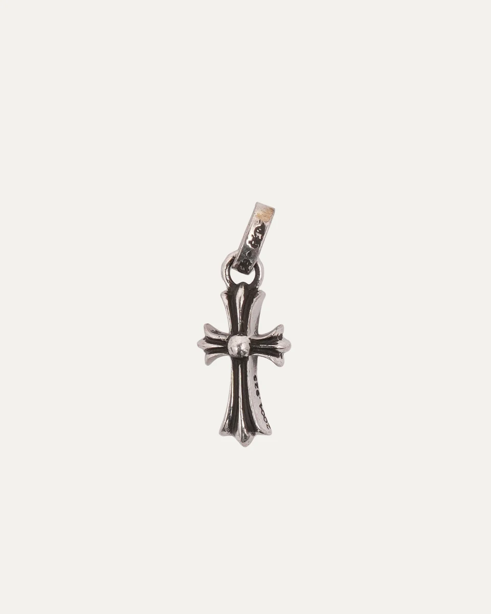
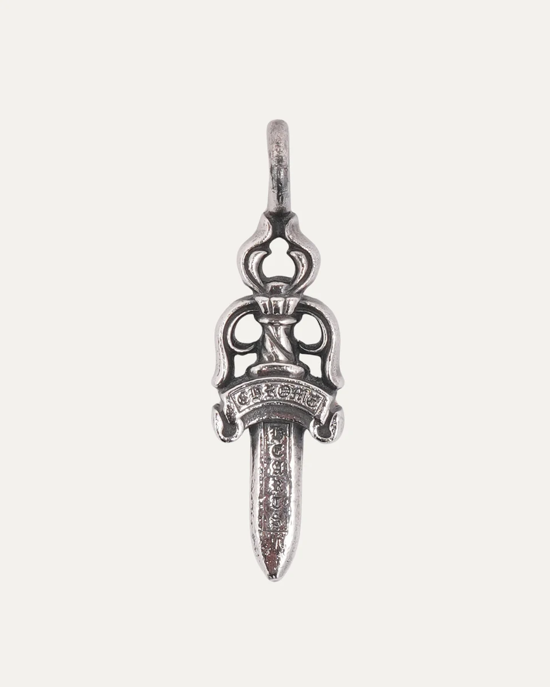
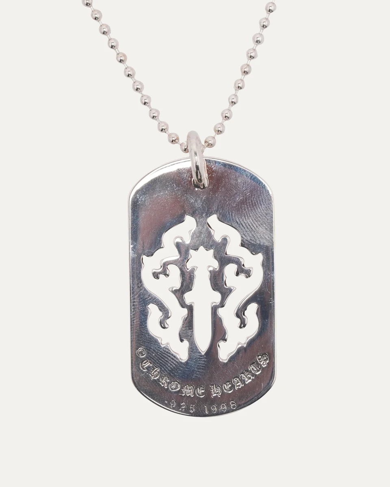

THE STYLE EDIT
THE STYLE EDITCartier
LOVE pendant — yellow gold
A circle can be as expressive as a stone.
US$4,300Explore ↗
U.S. reference · before taxNECKLACES / THE CATEGORY
一条细链，也有自己的设计语言。
REAL PIECES. CONSIDERED DETAILS.
A closer look at beautiful things. Discover the shapes, materials and details behind each piece.
From quiet gold lines to Gothic silver pendants, compare the material, proportion and exact format of each pictured example. Brand retail references and resale asking prices are individually labelled.
THE STYLE EDITA circle can be as expressive as a stone.
 THE STYLE EDIT
THE STYLE EDITThe Smile pendant treats a small gesture as the whole composition.
 THE STYLE EDIT
THE STYLE EDITB.zero1 rewards a view from the side.
 THE STYLE EDIT
THE STYLE EDITCoco Crush translates the visual softness of quilting into a small, sculptural pendant.

THE STYLE EDITThe Baby Fat cross makes a small amount of silver feel remarkably sculptural.

THE STYLE EDITThe Dagger pendant builds its character around a long central line.

THE STYLE EDITA dog tag gives the Vine Dagger motif a broad silver surface to work against.
USD prices for the pictured examples. Brand retail references and resale asking prices are labelled separately. Sources reviewed 19 October 2026–26 October 2026; check each cited source for current price, fees, condition and availability.
STORIES TO BEGIN WITH
THE ILLUSTRATED ARCHIVE